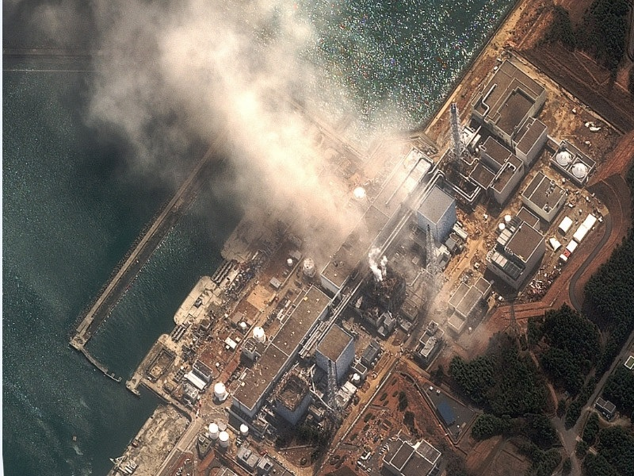
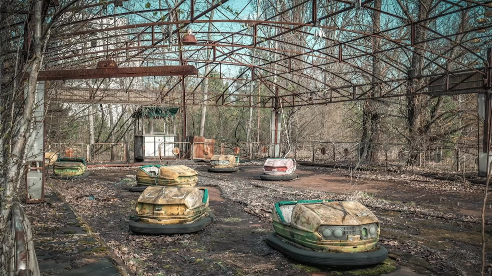

Die Katastrophe von Fukushima
Erdbeben, Tsunami, Ausfall der Kühlung und Folgen für Mensch und Umwelt.
Mittelschule am Sportpark
Lernplattform von Johannes Mößner

Erdbeben, Tsunami, Ausfall der Kühlung und Folgen für Mensch und Umwelt.

Ursachen, Ablauf und langfristige Folgen einer Reaktorkatastrophe.
Zwischenlagerung, Transport und Endlagerung von radioaktivem Material.
Teste dein Wissen zu Tschernobyl, Fukushima und radioaktivem Abfall mit 9 Fragen.